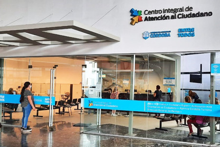
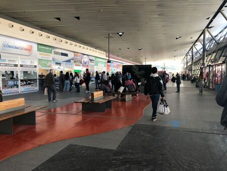

Locales
en la Terminal de Ómnibus Córdoba se encuentran instalados mas de 100 locales comerciales
 resize.jpg)
locales en la Antigua Terminal de Ómnibus

desde el año 20019 la Terminal de Ómnibus alberga uno de los Centros de Atención Comercial de EPEC

mas locales en la Antigua Terminal

ciac T2 donde se puede tramitar ciudadano digital

en la Nueva Terminal existe gran variedad de rubros para cubrir las necesidades de los pasajeros y público en general

el Ente Regulador de Servicios Públicos posee una oficina en la Nueva Terminal a los fines del control y supervisión del transporte